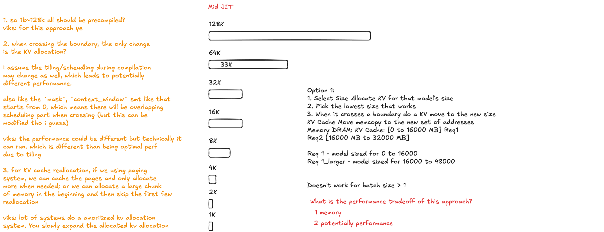
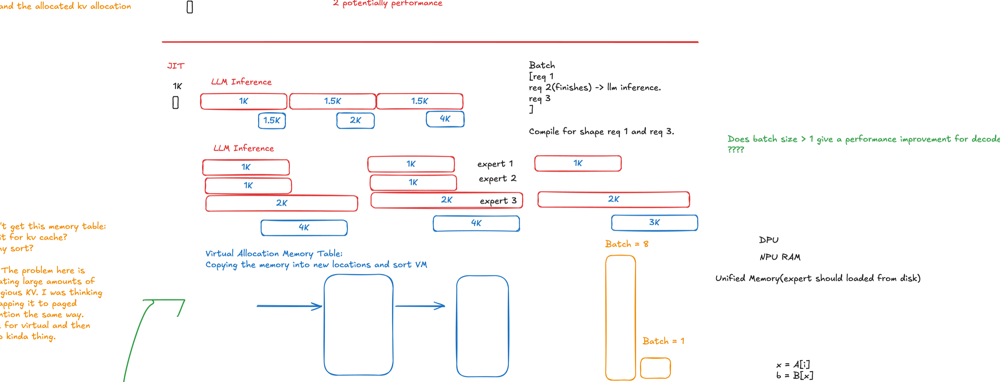
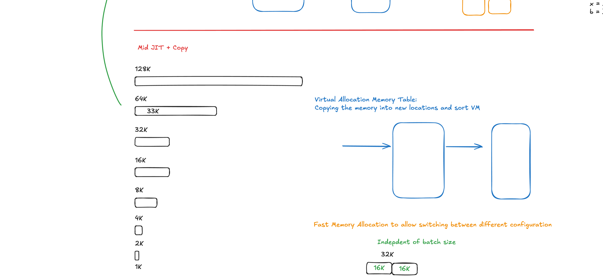

The static-shape tax
Long-context generation is dynamic: each decoded token makes the KV cache a little larger. The NPU compiler sees something different. It wants concrete tensor shapes and turns each supported context capacity into a separate compiled artifact.
That creates an uncomfortable choice:
Vikranth’s first sketch framed the design space as a ladder of compiled capacities—1K, 2K, 4K, 8K and beyond—and asked when to compile, how to carry live KV state forward, and whether the next allocation could be prepared cheaply.

Turn compilation into a deadline
The central move is scheduling, not a new compiler backend. Compile only the smallest variant before decode. Once that variant starts running on the NPU, launch compilation of the immediate successor on the CPU. The tokens remaining before the current capacity is full become a natural latency-hiding window.
T_compile(next) < T_decode(tokens remaining)
One-ahead matters. Compiling every future size in parallel front-loads work and memory. Waiting until the boundary is too late. Staying one step ahead bounds speculative work while giving compilation the longest useful runway.

What we ran on NUC16
We evaluated the idea on the NUC16 machine with Intel NPU 5 and OpenVINO 2026.3. The workload used Qwen2.5-0.5B in FP16, a 128-token prompt, and 8,064 teacher-forced decoded tokens. The runtime grew through four capacities: 1K → 2K → 4K → 8K.
I2 treatment = compile 1K first, then compile 2K / 4K / 8K one step ahead
Design = N=5 paired, Williams-order counterbalanced runs
The control and treatment use the same capacity ladder and the same copy-on-grow state path. Only compile scheduling changes. That isolates the question we care about: how much wall time can be removed from the foreground by moving successor compilation into decode?
| Endpoint | I1 eager | I2 one-ahead | Paired effect |
|---|---|---|---|
| Foreground compile wall | 84.29 s | 65.33 s | −18.96 s · 22.49% |
| Protocol critical path | 232.43 s | 212.98 s | −19.46 s · 8.37% |
| Decode inference | 143.32 s | 142.94 s | −0.38 s · 0.26% |
| Boundary wait | — | 0.00 s | 15 / 15 ready |
Paired-t 95% CI: compile savings 17.95–19.96 s; critical-path savings 18.71–20.21 s; decode change −1.05–0.29 s. With five pairs, the minimum exact two-sided sign-flip p-value is 0.0625, so we emphasize effect size, interval, replication, and boundary evidence—not a p<.05 claim.
Correctness is a transition property
A model that survives startup can still fail when live state crosses a compiled-shape boundary. We therefore checked the boundary logits against the eager control. All 20 comparisons preserved the top-1 token, with minimum cosine similarity reported as 1.0. Device checks also confirmed that successor variants remained placed on the NPU.
Make the work smaller, then hide what remains
Tracing the OpenVINO NPU compiler exposed 33.33 million repeated dependency-vector sorts in the scheduling path; 94.2% were cache hits under memoization. The resulting compiler patch reduced full compile time by 3.34–3.68% in 12/12 production A/B trials.
The two levers compound: compiler work attacks how much CPU time a specialization needs, while one-ahead JIT changes where that time lands on the application’s critical path.
What this result does—and does not—show
The campaign demonstrates a latency result: successor compilation can be hidden behind decode, all measured deadlines can be met, and the handoff can preserve outputs. It does not yet establish a memory win.
The drawing below points toward that next layer: decouple logical KV addresses from physical storage so a larger specialization can inherit existing pages rather than recopying all prior state. That remapping path is a design direction, not a measured result reported here.

Three lessons
The larger idea is broader than this model or device: when an accelerator requires static programs but the workload evolves predictably, the runtime can treat future specializations as deadline-driven background jobs. Compile the next world while the current one is still useful.